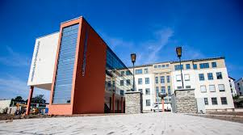
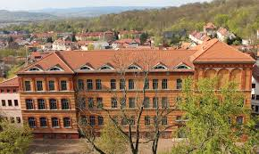

Das Humboldt Gymnasium bietet eine vielseitige Ausbildung für Schülerinnen und Schüler in Nordhausen. Mit rund 600 Schülerinnen und Schülern sowie einem engagierten Lehrerkollegium legen wir großen Wert auf individuelle Förderung und ein angenehmes Lernklima. Der Unterricht verbindet klassische Bildungsinhalte mit modernen Methoden – so bereiten wir unsere Schüler optimal auf Studium und Beruf vor.


Die Schule legt besonderen Wert auf Bildung, persönliche Entwicklung und ein starkes Gemeinschaftsgefühl. Ob im Unterricht, bei AGs oder auf Schulveranstaltungen – am Humboldt Gymnasium ist immer etwas los!